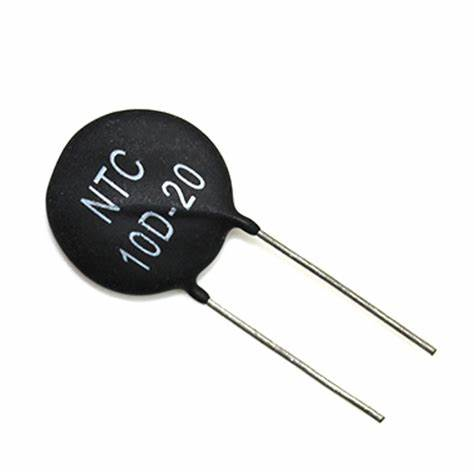

Tipos de Resistencias Variables en Electrónica
Potenciómetro
Un potenciómetro es un componente electrónico cuya resistencia se puede variar manualmente
para controlar el voltaje o la corriente en un circuito.
Estructura
- Terminal fija A: Un extremo de la resistencia interna.
- Terminal fija B: El otro extremo de la resistencia interna.
- Terminal deslizante (Wiper): Se mueve sobre la pista resistiva para ajustar la
resistencia.
Funcionamiento
- Modo divisor de voltaje: Se conecta a una fuente de voltaje y el terminal central
entrega un voltaje variable.
- Modo de resistencia variable: Se usa solo una terminal fija y el wiper, funcionando
como resistencia ajustable.
Tipos de potenciómetros
- Lineales: La resistencia cambia de manera uniforme con el giro.
- Logarítmicos: La variación de resistencia sigue una curva logarítmica.
- Multivuelta: Requiere varias vueltas para recorrer todo el rango.
- Digitales: Controlados electrónicamente.
Aplicaciones
- Control de volumen en dispositivos de audio.
- Ajuste de brillo en pantallas.
- Control de velocidad en motores.
- Regulación de frecuencia en circuitos de radio.
Trimpot
Un trimpot es un tipo de potenciómetro ajustable diseñado para realizar calibraciones en
circuitos electrónicos. Se usa para ajustes ocasionales y no para manipulación constante.
Características principales
- Tamaño pequeño y compacto.
- Se ajusta con un destornillador.
- Mayor precisión que un potenciómetro convencional.
- Pueden ser de una o varias vueltas para ajustes finos.
Tipos de Trimpot
- De una vuelta: Ajuste rápido, común en circuitos simples.
- Multivuelta: Requiere varias vueltas para recorrer toda la resistencia, ideal para
ajustes muy precisos.
Aplicaciones
- Calibración de sensores.
- Ajuste de voltajes en fuentes de alimentación.
- Configuración de tiempos en circuitos temporizadores.
- Control de ganancia en amplificadores.
Reóstato
Reóstato
Un reóstato es un componente electrónico diseñado para controlar la corriente en un circuito mediante la
variación de su resistencia. Se usa principalmente en aplicaciones de alta potencia donde se requiere un
control preciso de la corriente.
Características principales:
- Es un tipo de resistencia variable, similar al potenciómetro pero con dos terminales en lugar de
tres.
- Puede manejar corrientes más altas que un potenciómetro.
- Generalmente se usa en aplicaciones industriales y de laboratorio.
- Su resistencia se ajusta moviendo un cursor sobre una pista resistiva.
Tipos de Reóstatos:
- De alambre enrollado: Hechos con un alambre resistivo enrollado sobre un núcleo
cerámico, ideales para altas potencias.
- Deslizantes: Utilizan un contacto móvil que se desplaza a lo largo de una pista
resistiva.
- Rotatorios: Su ajuste se hace girando un eje, similar a un potenciómetro, pero con
mayor capacidad de corriente.
Aplicaciones:
- Regulación de intensidad en motores eléctricos.
- Control de corriente en experimentos de laboratorio.
- Atenuadores de luces y calentadores eléctricos.
- Pruebas en circuitos eléctricos.
LDR (Resistor Dependiente de Luz)
LDR (Resistor Dependiente de Luz)
Un LDR (Light Dependent Resistor), también conocido como fotocélula, es un tipo de resistencia cuyo valor
varía en función de la cantidad de luz que incide sobre él. Su resistencia disminuye cuando aumenta la
intensidad luminosa y aumenta cuando la luz disminuye.
Características principales:
- Es un componente pasivo que cambia su resistencia según la cantidad de luz incidente.
- Su resistencia puede variar ampliamente, desde varios megaohmios en oscuridad hasta pocos ohmios
bajo luz intensa.
- Se utiliza principalmente en aplicaciones de detección de luz.
- Comúnmente se encuentra en dispositivos como alarmas de luz, sistemas automáticos de encendido y
apagado de luces, y cámaras fotográficas.
Tipos de LDR:
- LDR de carbono: Hechos con materiales de carbono, son muy sensibles a la luz y se
usan en aplicaciones de baja potencia.
- LDR de sulfuro de cadmio (CdS): Son más comunes y tienen una respuesta rápida a
cambios de luz.
Aplicaciones:
- Control de intensidad de luz en dispositivos automáticos.
- Detección de presencia de luz en sistemas de encendido y apagado automáticos.
- Medición de luminosidad en experimentos científicos.
- Dispositivos de seguridad, como alarmas que reaccionan al cambio de luz.

Termistor
Un termistor es un tipo de resistencia cuya resistencia eléctrica varía significativamente con la
temperatura. Son ampliamente utilizados en aplicaciones donde se requiere medir o controlar la temperatura.
Características principales:
- Su resistencia cambia con la temperatura, siendo más sensible a los cambios térmicos que una resistencia
convencional.
- Existen dos tipos de termistores: los NTC (coeficiente de temperatura negativo) y los PTC (coeficiente
de temperatura positivo).
- Son componentes muy precisos y rápidos para medir cambios de temperatura.
- Se utilizan principalmente en circuitos de protección, medición de temperatura y control de calor.
Tipos de Termistores:
- NTC (Negative Temperature Coefficient): Su resistencia disminuye a medida que aumenta
la temperatura. Son comunes en aplicaciones de medición de temperatura.
- PTC (Positive Temperature Coefficient): Su resistencia aumenta a medida que aumenta la
temperatura. Se usan en circuitos de protección y limitación de corriente.
Aplicaciones:
- Control de temperatura en dispositivos electrónicos, como termómetros digitales.
- Protección contra sobrecorrientes en circuitos eléctricos.
- Regulación de temperatura en dispositivos como calentadores y aire acondicionado.
- Medición de temperatura en sistemas de monitoreo y automatización industrial.
6. VDR (Varistor)
Es una resistencia cuya impedancia varía con el voltaje aplicado. Cuando el voltaje es bajo, su resistencia
es alta; cuando hay un pico de voltaje, su resistencia disminuye drásticamente, absorbiendo el exceso de
energía y protegiendo los circuitos de sobretensiones.

7. PTC (Coeficiente de Temperatura Positivo)
Es un tipo de termistor que aumenta su resistencia a medida que la temperatura sube. Se usa en circuitos de
protección contra sobrecalentamiento y en dispositivos de seguridad térmica. Actúa como un fusible que se
recupera solo tras enfriarse.

8. NTC (Coeficiente de Temperatura Negativo)
Es un termistor cuya resistencia disminuye al aumentar la temperatura. Se usa en sensores de temperatura,
compensación térmica en circuitos y arranques suaves de motores eléctricos. Son ideales para detectar
cambios de temperatura con alta precisión.
